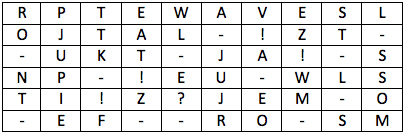

The key of the cipher, called the "lattice", is a rectangular stencil of size 6 by 10 cells. In the stencil, 15 cells are cut out so that when applied to a rectangular sheet of paper of size 6 by 10, its cut-outs completely cover the entire area of the sheet in four possible ways. The letters of the string $($without spaces$)$ are successively entered into the cut-outs of the stencil $($in rows, in each line from left to right$)$ at each of its four possible positions. Find the original string of letters if, after encryption, the following text appeared in the sheet of paper

The 12 unfilled cells coincide with the cut-outs of the grid in the fourth position.
The source text consists of 48 letters, therefore, when encrypting, three grid positions were used completely, and three more letters are inscribed in the fourth position. Hence, the 12 unfilled cells coincide with the cut-outs of the lattice in the fourth position. Since the text fits in sequentially, the three cuts unknown to us can be located only in the first row of the table and the first five cells of the second row $($before the first known cut$)$. We believe that the stencil lies in the fourth position. Given that two letters cannot be inscribed in one sheet of paper, we can see that the cut-outs can only be in the "?" cells of the stencil image. It is obvious that only one of the cells marked in the first line is cut out $($since they are combined by rotation$)$. We get two possible variations of the lattice $($either the first "?" or the second "?" is in the first line$)$. The readable text is obtained using the second variation. Answer:
POL!ZUJS!WIFROMPEWETKANEL!ZJOSTAVLJT!PUST?EMESTA
POL!ZUJS!WIFROMPEWETKANEL!ZJOSTAVLJT!PUST?EMESTA